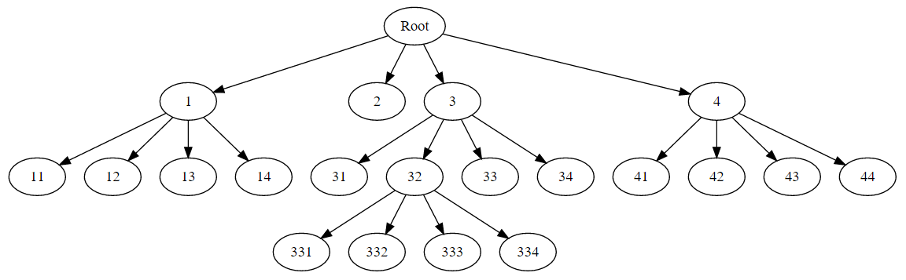

TDT4195 Digital Image Processing Assignment 3
Author: Sandor Zeestraten - zeestrat@stud.ntnu.no
Theory
1: What are the main aims of segmentation in computer vision? Give a couple of reasons for why segmentation is difficult.
The aims of image segmentation is to partition an image into multiple segments which can help us locate objects, boundaries and other meaningful information. Segmentation is difficult due to the wide range of different inputs. This makes it hard do make automatic algorithms that work well in all cases.
2: Describe how the region-based segmentation algorithm split and merge works. Segment the image on the left-hand side of Figure 1 using the split and merge algorithm and show the resulting quadtree.
Split and merge recursively splits an image into squares until a condition no longer is met (for example, same intensity levels).

3: Are morphological operations linear? Explain your reasoning.
No, morphological operations are non-linear.
4: Define opening and closing in terms of erosion and dilation. What happens when opening and closing are applied multiple times on the same image?
Opening is erosion followed by dilation. Closing is the opposite order. They are idempotent so nothing will happen when applied multiple times.
5: Determine the erosion A B of the 6 × 6 image on the right-hand side of Figure 1. Use the 1 × 3 structuring element next to the image. The reference pixel is indicated by a circle.
The 4 mid pixels will be 1. See Matlab code for graph.